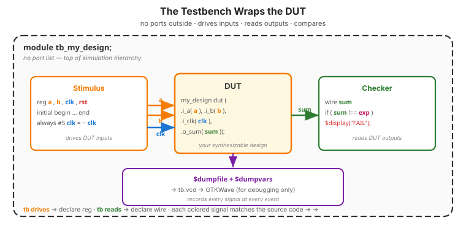
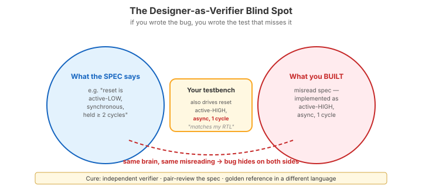
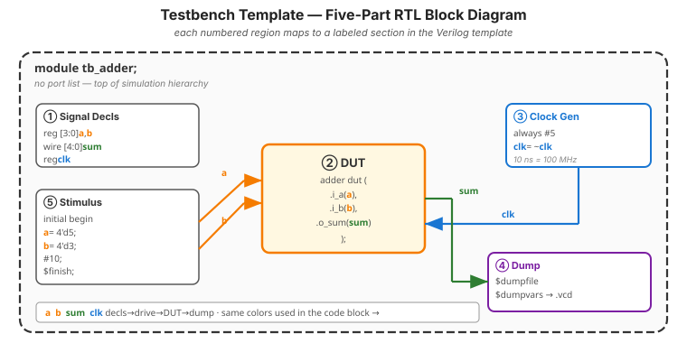
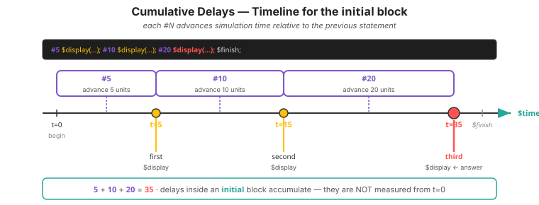
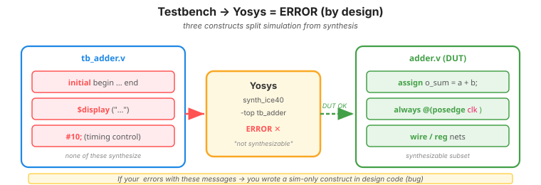

Video 1 of 4 · ~12 minutes
Dr. Mike Borowczak · Electrical & Computer Engineering · CECS · UCF
At Intel, Apple, NVIDIA, and every serious ASIC company: verification engineering is larger than design engineering, typically 2:1 in headcount. Tapeouts are killed or shipped based on coverage metrics. “Designed it” is 20% of a working chip; “proved it works” is the other 80%. Senior verification engineers routinely out-earn senior designers.
Every make sim you've run used a testbench someone wrote. Today you start writing them yourself. Topic 6 videos 2-4 add self-checking, tasks for organization, and file-driven test vectors. By Topic 14 you'll write assertions. You become the verification engineer.
“A testbench is a different kind of thing — some special file with $display and timing. Different syntax than my design.”
A testbench is just a module with no ports. It instantiates your Design Under Test (DUT) as a sub-module, drives the DUT's inputs, reads the DUT's outputs, and compares them to expected values. Same Verilog language you've been writing all week — plus a handful of simulation-only constructs (initial, $display, #delay) that tools like Yosys ignore.
module tb_foo; — no parentheses, no port list. It lives in the top of your simulation hierarchy, orchestrating the test from outside.

reg in the tb); the checker on the right reads the DUT's outputs (those are wire). The whole assembly is a single Verilog module — tb_my_design — sitting at the top of the simulation hierarchy with nothing above it.

`timescale 1ns/1ps // simulation resolution
module tb_adder; // no ports — top of sim hierarchy
// 1. Declare DUT signals
reg [3:0] a, b; // inputs to DUT → reg (driven by tb)
wire [4:0] sum; // outputs from DUT → wire (read by tb)
// 2. Instantiate the DUT
adder dut (.i_a(a), .i_b(b), .o_sum(sum));
// 3. Clock generator (if sequential) — always block with period
reg clk = 0;
always #5 clk = ~clk; // 10 ns period = 100 MHz
// 4. Waveform dump (for GTKWave)
initial begin
$dumpfile("tb_adder.vcd");
$dumpvars(0, tb_adder);
end
// 5. Stimulus and checks
initial begin
a = 0; b = 0;
#10; a = 4'd5; b = 4'd3;
#10; $display("5+3 = %d", sum);
#10; $finish;
end
endmodule
In a testbench, why must DUT inputs be declared as reg in the testbench?
initial). Topic 2 rule: anything assigned in an always/initial block must be declared reg. DUT outputs are driven by the DUT, so they must be wire on the testbench side.
wire in the testbench. The simulator will refuse to let you assign to it. Easy fix, confusing error message.
At what simulation time does the third $display fire?
initial begin
#5 $display("first at t=%0t", $time);
#10 $display("second at t=%0t", $time);
#20 $display("third at t=%0t", $time);
$finish;
end
$finish.
~5 minutes
▸ COMMANDS
cd lecture_examples/week2_day06/d06_s1_ex1/
# Start from empty tb_adder.v
# Build: decls → instantiate → clock → dump → stim
iverilog -g2012 -o sim.vvp tb_adder.v adder.v
vvp sim.vvp
gtkwave tb_adder.vcd &▸ EXPECTED STDOUT
VCD info: dumpfile
tb_adder.vcd opened
a=0 b=0 -> sum=0
a=1 b=2 -> sum=3
a=200 b=100 -> sum=300
a=255 b=1 -> sum=256 (carry expected)
tb_adder.v:31: $finish called▸ GTKWAVE
Signals a · b · sum. Watch the values change at the delays you scheduled. If you forgot $dumpvars your waveform will be empty — the most common testbench failure mode.
Testbenches don't synthesize — they're simulation-only:
$ yosys -p "read_verilog tb_adder.v; synth_ice40 -top tb_adder" -q
ERROR: Module `\tb_adder' is not synthesizable.
- contains initial block (simulation only)
- contains $display (simulation only)
- contains timing control (#10) (simulation only)
Ask AI: “Here's my 4-bit counter. Write a self-contained testbench that exercises reset, counts to 15, and verifies rollover.”
TASK
Ask AI for a full testbench for your counter.
BEFORE
Predict: 5-part structure with reset + 16 clock cycles + rollover check.
AFTER
Good AI: complete 5 parts. Weak AI misses $dumpfile or uses wrong reg/wire.
TAKEAWAY
AI is actually good at testbench boilerplate. Verify the dumpvars line exists.
① A testbench is just a Verilog module with no ports.
② Five parts: decls, DUT instance, clock, dumpfile, stimulus.
③ DUT inputs → reg in tb. DUT outputs → wire in tb.
④ Testbenches don't synthesize — that's the whole point.
⑤ Same person writing RTL and testbench = same logic flaw on both sides.
🔗 Transfer
Video 2 of 4 · ~12 minutes
▸ WHY THIS MATTERS NEXT
Printing values and eyeballing waveforms doesn't scale. Video 2 introduces self-checking testbenches — the PASS/FAIL pattern you've been reading all week, from the inside. By the end, every testbench you write will check itself and tell you exactly what broke.